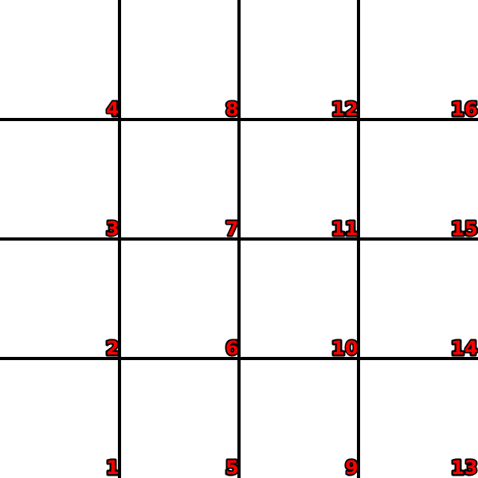
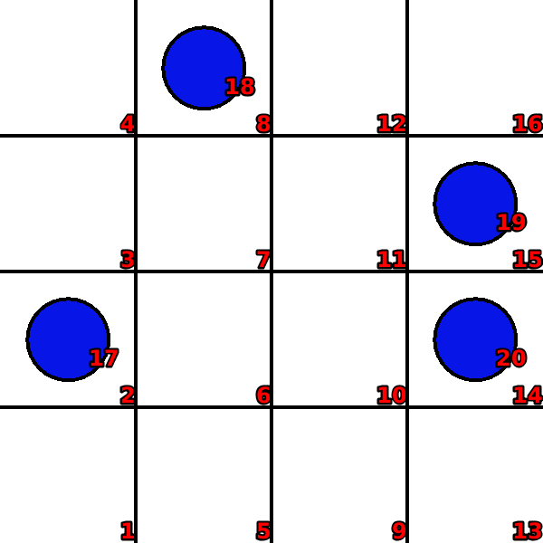
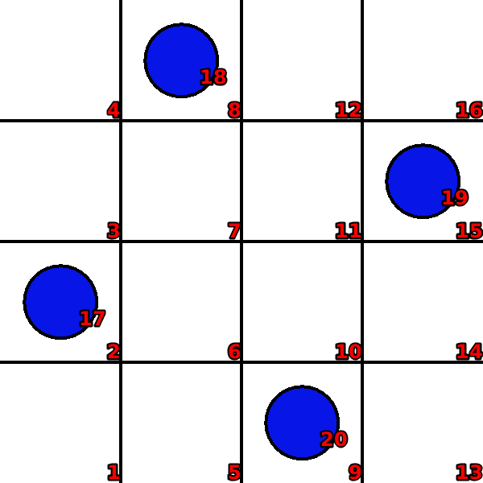

N-queens
Language: Teaching Script Entire Dialog
World states:
init-rooks.world
fail-queens.world
final-queens.world
Primitive concepts used
Object types:
|
locations, blocks |
Colors:
|
red, blue
|
| Spatial relations: |
on, below, between |
| Functions: |
count of, less than |
Teaching Dialog (Rosie in bold)
TEACHER: The name of the puzzle is n-queens.
Please setup the puzzle.
TEACHER: Load init-rooks.

Ok.
TEACHER: Ok.
Please describe the actions, goals, and failure conditions.
TEACHER: The name of an action is place-block.
What are the conditions of the action.
TEACHER: You can move a clear available block onto a clear location.
Please describe the meaning of 'available' in this context.
TEACHER: If a block is not on a location then it is available.
Ok, I've learned the meaning of 'available' for this context.
Please describe the meaning of 'clear' in this context.
TEACHER: If a location is not below an object then it is clear.
Ok, I've learned the meaning of 'clear' for this context.
I've learned the action.
TEACHER: The solution has four steps.
Ok.
TEACHER: Load fail-queens.

Ok.
TEACHER: The name of a failure is placed-same-row.
Please setup the failure condition.
TEACHER: Ok.
Please describe the failure condition.
TEACHER: If two of the blocks are placed and they have the same row then you lose.
Please describe the meaning of 'placed' in this context.
TEACHER: If a block is on a location then the block is placed.
Ok, I've learned the meaning of 'placed' for this context.
I've learned the failure condition.
TEACHER: The name of a failure is place-same-col.
Please setup the failure condition.
TEACHER: Ok.
Please describe the failure condition.
TEACHER: If two of the blocks are placed and they have the same column then you lose.
I've learned the failure condition.
TEACHER: The name of a failure is place-same-diag.
Please setup the failure condition.
TEACHER: Ok.
Please describe the failure condition.
TEACHER: If two of the placed blocks are cross-diagonal then you lose.
Please describe the meaning of 'diagonal' in this context.
TEACHER: If the difference of the rows of the blocks is equal to the difference of the columns of they then they are cross-diagonal.
Ok, I've learned the meaning of 'diagonal' for this context.
I've learned the failure condition.
TEACHER: Load final-queens.

Ok.
TEACHER: The name of the goal is all-placed.
Please setup the goal state.
TEACHER: Ok.
Please describe the goal.
TEACHER: The goal is that all blocks are placed.
I've learned the goal.
TEACHER: Done.
I've learned n-queens. Should I try to solve the puzzle?
TEACHER: No.
Ok.